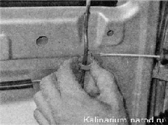
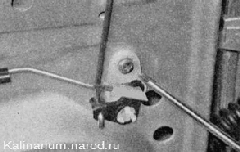
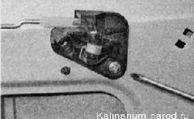
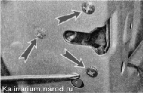
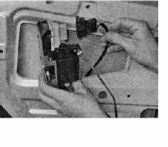
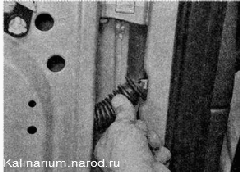
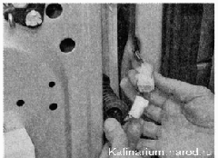
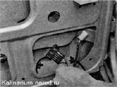

Замок задней двери снятие и установкаСнятие 1. Снимаем направляющую стекла двери . 2. Сняв пластмассовый фиксатор, освобождаем тягу кнопки блокировки замка. 
3. Крестовой отверткой отворачиваем винт крепления промежуточной тяги. 
4. Той же отверткой отворачиваем винт крепления внутренней ручки замка к двери.  5. Крестовой отверткой отворачиваем три винта крепления замка. 6. Извлекаем замок из двери, отсоединяем от него колодку жгута проводов и снимаем замок в сборе с тягами и электроприводом. Установка Устанавливаем замок в обратной последовательности. Для выполнения работы потребуется помощник. Снятие 1. Снимаем стеклоподъемник. 2. Извлекаем стекло из двери. 3. Снимаем наружную ручку двери. 4. Снимаем замок двери. 5. Отсоединяем гофрированный шланг жгута проводов от стойки. 

6. Разъединяем колодки жгутов проводов. При разборке двери снимите со жгута проводов гофрированный шланг, а ЖГУТ выньте через отверстие двери. 7. Отсоединяем ограничитель открывания двери от стойки. 8. Выворачиваем оси из петель и снимаем так же, как это показано на передней двери. Установка Покрыв рабочие поверхности петель и осей любой пластичной смазкой, устанавливаем и собираем дверь в обратной последовательности. |